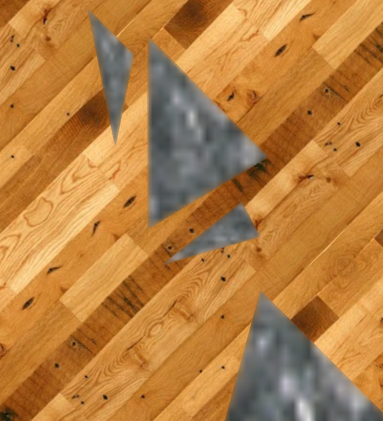

Hardware Accelerated Depth-of-Field



Image showing partial occlusion on the edge of the rifle in the foreground
Cube partially in focus
In computer graphics, even to date it is usual to use what is referred to as a pinhole camera model. This is a camera
model where everything in the scene is in focus. Historically this model is used due to real time constraints.
Non real time computer generated graphics (CGI) such as those sometimes produced for scenes in film can be produced
using ray tracing, and other techniques to capture camera phenomena such as depth-of-field. In particular depth of field
is important as it allows a photographer or director to direct attention to a certain part of the scene.
A real time simulation of accurate depth-of-field could not only add to the realism of virtual environments
but smooth the transition between real video footage and CGI.
Much research has been done in the area of depth-of-field rendering for real time applications. I have managed to
further research into this area by developing a hardware accelerated algorithm which simulates partial occlusion
and runs at real time frame rates. It supports a range of camera setups. The technique still needs some improvements
to the blending which is aided by a sobel filter.
The demo program uses a camera based on a 35mm lens and allows adjusting of focal length, focal distance, apperture and f-stop for the lens (Tip: I and 0 keys adjust the focal length which is the most useful if you are not used to technical terms)
<< Back